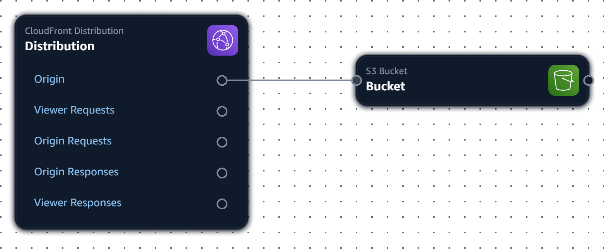

Static Website on S3 with CloudFront
This diagram shows a simple static website architecture. The website files (HTML, CSS, JavaScript, images) are stored in an S3 bucket. CloudFront acts as a Content Delivery Network (CDN) to serve the website content to users globally. CloudFront caches the content closer to users, resulting in faster loading times and improved performance.